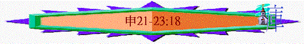

|
持
得
豐
盛
之
關
鍵 |
|||||
|
勇敢踏上 |
謹守遵行 |
選擇上好 |
追念失敗 |
得蒙賜福 |
效法神僕 |
|
１－３ |
４－２６ |
２７－３０ |
３１－３２ |
３３ |
３４ |
A.
宗教細則(12:1
-16:17)
B.
國家規條(16:18-20:20)
C.
生活條例(21-26)
〜而每一項規例中，也表達以下屬神子民在世應要的表現
a.要承擔責任(21:1-14)
(1)在流血案件中
〜若遇見被殺的人倒在田野，不知是誰殺，是否事不關己，己不勞心，沒人去處理，答案是不是，在最近之城的人，要負責。
(A)有責任查究案件
「長老和審判官就要出去，從被殺的人那裡量起，直量到四圍的城邑，看哪城離被殺的人最近，那城的長老就要從牛群中取一隻未曾耕地、未曾負軛的母牛犢。」21:2-3
「祭司利未的子孫要近前來；因為耶和華你的神揀選了他們事奉他，奉耶和華的名祝福，所有爭訟毆打的事都要憑他們判斷。」21:5
(B)有責任表明無辜
「那城的眾長老，就是離被殺的人最近的，要在那山谷中，在所打折頸項的母牛犢以上洗手，禱告（原文作回答）說：『我們的手未曾流這人的血；我們的眼也未曾看見這事。」21:6-7
〜代表最近城的長老要在神面前，誠實表明未他們未曾看見這事，表明他們是無辜的。
(C)有需要求神赦免
「耶和華啊，求你赦免你所救贖的以色列民，不要使流無辜血的罪歸在你的百姓以色列中間。』這樣，流血的罪必得赦免。你行耶和華眼中看為正的事，就可以從你們中間除掉流無辜血的罪。」21:8-9
〜在舊約，常用未曾負軛的牛，作贖罪，有人死狂應許之地，地是不潔了，百姓用牛犢作贖罪（更預表基督將為人贖罪)，求神使流無辜血的罪不歸在他身上。
(2)在夫妻關係上
「若在被擄的人中見有美貌的女子，戀慕他，要娶他為妻，」21:11
〜在舊約中，神容許將仇敵中的女子給選民為掠物，選民若喜愛，可以娶他們的女子為妻，事實上，女子們所倚靠的已死去，也需要靠未來的丈夫為支持。
(A)有責任看她為妻
「脫去被擄時所穿的衣服，住在你家裡哀哭父母一個整月，然後可以與他同房。你作他的丈夫，他作你的妻子。後來你若不喜悅他，就要由他隨意出去，決不可為錢賣他，也不可當婢女待他，因為你玷污了他。」21:13-14
〜無論在甚麼情況她已與選民同房，選民有責任以她為妻子，不再是奴婢，隨意買賣了
(B)有責任給她自由
〜由於不是奴婢，是妻子，就有自由了，若丈夫不喜悅她(申24:1補充若妻子行一些不合理的事)，丈夫不可苦待她，不可轄制、困鎖她，要給她自由，隨意出去
b.要大公無私(21:15-23)
(1)在承繼家業上
「到了把產業分給兒子承受的時候，不可將所愛之妻生的兒子立為長子，在所惡之妻生的兒子以上，卻要認所惡之妻生的兒子為長子，將產業多加一分給他；因這兒子是他力量強壯的時候生的，長子的名分本當歸他。」21:16-17
〜神重視倫理、次序、自由的，長子理應承繼產業(今日社會也一樣)，人不可因惡長愛幼，而偏心將幼作承繼者。
(2)在懲治逆子上
(A)悖逆之子
「人若有頑梗悖逆的兒子，不聽從父母的話，他們雖懲治他，他仍不聽從，父母就要抓住他，將他帶到本地的城門、本城的長老那裡。」21:18-19
「本城的眾人就要用石頭將他打死。這樣，就把那惡從你們中間除掉，以色列眾人都要聽見害怕。」21:21
(B)咒詛之子
「人若犯該死的罪，被治死了，你將他掛在木頭上，他的屍首不可留在木頭上過夜，必要當日將他葬埋，免得玷污了耶和華你神所賜你為業之地。因為被掛的人是在神面前受咒詛的。」21:22-23
「基督既為我們受（原文作成）了咒詛，就贖出我們脫離律法的咒詛；因為經上記著：「凡掛在木頭上都是被咒詛的。」」加3:13
〜人犯該死的罪，會被掛在木頭上，被挂的人是受咒詛，耶穌不是悖逆之子，是神的愛子，是全世界最順從，最孝順的兒子，他沒有犯該死的罪，但為人的原故，竟承擔這預表中的咒詛！
〜父神要愛子承擔人類該死的罪，祂也沒偏私，放鬆，或一筆勾消，祂也施行公義，使祂愛子死在十架上。
c.要甘心施恩(22:1-8)
(1)樂意幫助
「你若看見弟兄的牛或羊失迷了路，不可佯為不見，總要把他牽回來交給你的弟兄。你弟兄若離你遠，或是你不認識他，就要牽到你家去，留在你那裡，等你弟兄來尋找就還給他。」22:1-2
「你若看見弟兄的牛或驢跌倒在路上，不可佯為不見，總要幫助他拉起來。」22:4
〜看見弟兄的牛、羊迷失，不可佯為不見，這種幫助可能要付出時間，付出金錢，但總要幫助。
(2)留有餘地
「你若路上遇見鳥窩，或在樹上或在地上，裡頭有雛或有蛋，母鳥伏在雛上或在蛋上，你不可連母帶雛一併取去。總要放母，只可取雛；這樣你就可以享福，日子得以長久。」22:6-7
〜人對動物亦要有情有恩，苦取母，其餘所有的必死，只可取雛，留有餘地，人若在此時也能夠做到，對人也可以流露這種恩典。
(3)顧念他人
「你若建造房屋，要在房上的四圍安欄杆，免得有人從房上掉下來，流血的罪就歸於你家。」22:8
d.要分別為聖(22:9-23:18)
〜神要選民或為聖潔的國度，要別出來，令世人驚嘆這民族的超凡，也使選民離惡成聖，成為彎曲悖憀世代中的明燈。
〜所以選民的生活、衣著也與外邦人不同。
〜而分別為聖的更重要原因是神常在應許地中，從這些規條可反映神的聖潔及人要與神同住，同樣要追求聖潔。
(1)在衣著上→勿胡亂
「婦女不可穿戴男子所穿戴的，男子也不可穿婦女的衣服，因為這樣行都是耶和華你神所憎惡的。」22:5
「不可穿羊毛、細麻兩樣攙雜料做的衣服。你要在所披的外衣上四圍做繸子。」22:11-12
〜神不喜歡悖性的事，男就是男，女就是女，若人在衣著上胡亂，其它亦可以，容易行神所憎之事。
〜另外衣著不能攙雜料，易產生靜電，也會有皮膚敏感情況，但以上也不重要，最重要是令選民及外邦人思索神原來如此純一，不攙雜的。
～另外也要有繸子，代表神的話常在身邊。
(2)在耕種上→要歸一
「不可把兩樣種子種在你的葡萄園裡，免得你撒種所結的和葡萄園的果子都要充公。不可並用牛、驢耕地。」22:9-10
〜兩種攙雜的種籽施種，能使地力消耗更快，而牛驢耕地或許指牛驢交配(參利19:19)而當初神創造天地，定各從其類的，不是混雜、胡亂的。
(3)在關係上→要忠貞
(A)同房之前的忠貞
(a)真實查証對方之貞潔(不能信口開河)
「人若娶妻，與他同房之後恨惡他，信口說他，將醜名加在他身上，說：『我娶了這女子，與他同房，見他沒有貞潔的憑據』；女子的父母就要把女子貞潔的憑據拿出來，帶到本城門長老那裡。」22:13-15
「並要罰他一百舍客勒銀子，給女子的父親，因為他將醜名加在以色列的一個處女身上。女子仍作他的妻，終身不可休他。」22:19
〜人不能信口說配偶不忠，將醜名加在她身上，要有憑據的。
(b)嚴厲處決淫亂之配偶
「但這事若是真的，女子沒有貞潔的憑據，就要將女子帶到他父家的門口，本城的人要用石頭將他打死；因為他在父家行了淫亂，在以色列中做了醜事。這樣，就把那惡從你們中間除掉。」22:20-21
(B)訂盟以後的突變
(a)卻行淫
「若有處女已經許配丈夫，有人在城裡遇見他，與他行淫，你們就要把這二人帶到本城門，用石頭打死女子，是因為雖在城裡卻沒有喊叫；男子是因為玷污別人的妻。這樣，就把那惡從你們中間除掉。若有男子在田野遇見已經許配人的女子，強與他行淫，只要將那男子治死。」22:23-25
〜一同處死
(b)遭強暴
「若有男子在田野遇見已經許配人的女子，強與他行淫，只要將那男子治死。但不可辦女子；他本沒有該死的罪，這事就類乎人起來攻擊鄰舍，將他殺了一樣。」22:25-26
〜女子無事
〜男子處死
(C)沒有盟約的處境
「若有男子遇見沒有許配人的處女，抓住他，與他行淫，被人看見，這男子就要拿五十舍客勒銀子給女子的父親；因他玷污了這女子，就要娶他為妻，終身不可休他。」22:28-29
「人若引誘沒有受聘的處女，與他行淫，他總要交出聘禮，娶他為妻。若女子的父親決不肯將女子給他，他就要按處女的聘禮，交出錢來。」出22:16-17
〜在舊約時代，女子被玷污，沒有貞潔，是很羞辱的事，沒有人會娶她，她是無所靠的，男子應有責任娶她及作出賠償。
〜當然代表女子的父親可以不許。
(D)有歪倫常的惡行
「人不可娶繼母為妻；不可掀開他父親的衣襟。」22:30
(4)在身子上→要完全
「凡外腎受傷的，或被閹割的，不可入耶和華的會。」23:1
〜在迦南異教常有被閹男子作孌童，參與拜鬼神的儀式，不許被閹之人入會，可能目的保宗教敬拜的純一與聖潔
(5)在血統上→要清白
「私生子不可入耶和華的會；他的子孫，直到十代，也不可入耶和華的會。」23:2
〜私生子，可能不清楚他父親是甚麼族人，或許外邦人，會否混雜異教？會否是神所憎的民族？選民要留意。
(6)在種族上→要分別
「亞捫人或是摩押人不可入耶和華的會；他們的子孫，雖過十代，也永不可入耶和華的會。因為你們出埃及的時候，他們沒有拿食物和水在路上迎接你們，又因他們雇了美索不達米亞的毗奪人比珥的兒子巴蘭來咒詛你們。然而耶和華你的神不肯聽從巴蘭，卻使那咒詛的言語變為祝福的話，因為耶和華你的神愛你。」23:3-5
「不可憎惡以東人，因為他是你的弟兄。不可憎惡埃及人，因為你在他的地上作過寄居的。」23:7
〜神要審判亞捫及摩押人，他們曾不接待選民，也請巴蘭咒詛選民，咒詛選民的必受咒詛。
〜但以東是選民的兄弟，埃及也曾對選民有恩，他們雖也惡對選民，但相對的刑罰較輕。
(7)在爭戰上→要聖潔
「因為耶和華你的神常在你營中行走，要救護你，將仇敵交給你，所以你的營理當聖潔，免得他見你那裡有污穢，就離開你。」23:14
(A)關乎夢遺
「你出兵攻打仇敵，就要遠避諸惡。你們中間，若有人夜間偶然夢遺，不潔淨，就要出到營外，不可入營。」23:9-10
(B)關乎便溺
「在你器械之中當預備一把鍬，你出營外便溺以後，用以鏟土，轉身掩蓋。」23:13
(8)在職業上→禁娼妓
「以色列的女子中不可有妓女；以色列的男子中不可有孌童。娼妓所得的錢，或孌童（原文作狗）所得的價，你不可帶入耶和華你神的殿還願，因為這兩樣都是耶和華你神所憎惡的。」23:17-18
〜「妓女」也指當時的廟肢，「孌童」在異教儀式中供人玩狎的男妓，選民要杜絕這風俗。
〜從惡所得來的金錢也不能獻給神，因神是忌邪、聖潔的！
(9)在衛生上→要潔淨
「在大痲瘋的災病上，你們要謹慎，照祭司利未人一切所指教你們的留意遵行。我怎樣吩咐他們，你們要怎樣遵行。」24:8